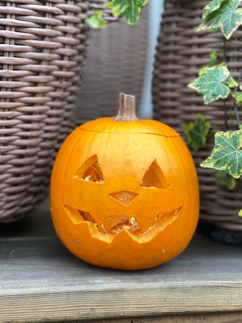

Följ steg för steg hur du karvar din egna pumpa.
Du behöver:
- En pumpa
- En penna
- En vass kniv
- En sked
- En skål
- En ljuskälla
Steg 1.
Välj din pumpa och välj vilken sida som du vill karva.
Steg 2.
Ta pennan och rita ut det mönster eller ansikte som du vill karva.
Steg 3.
Ta din vassa kniv och karva ut locket på pumpan.

Steg 4.
Ta bort locket och lägg åt sidan, gröp ur pumpan och samla kärnorna och inanmätet i en skål.
Steg 5.
Karva ut efter din ritning på pumpan med en vass kniv, var försiktig så du inte slinter med kniven.

Steg 6.
Du är nu färdig, lägg i din ljuskälla och ställ ut din pumpa på ett lämpligt ställe.